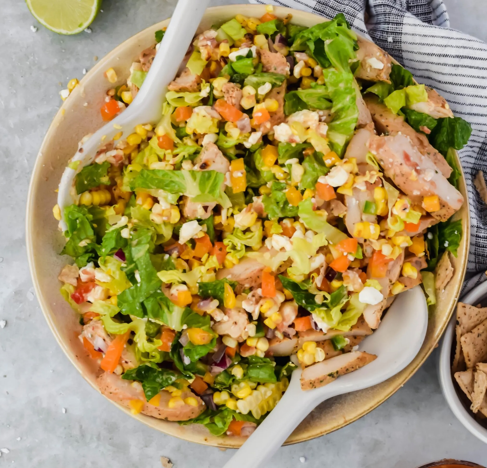
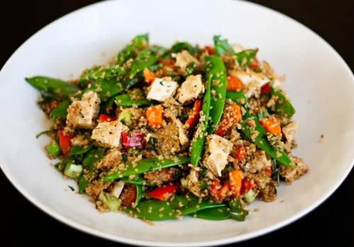

Recipes
BEC
Description
The Bacon, Egg, and Chesse Sandwich, aka the "BEC," is a healthy
breakfast option made on a croissant. Its main ingredients include
turkey bacon, egg whites, and pepper jack cheese. The combination of
these ingredients inside a buttery croissant makes for a delicious
meal high in protein and low on calories.
Ingredients
- 2 slices of turkey bacon
- 1/2 cup of egg whites
- 1 slice of pepper jack cheese
- 1 croissant
Steps
- Pan-sear 2 slices of turkey bacon for five minutes.
- Simultaneously pan-sear 1/2 a cup of egg whites for five minutes.
- In the interim, take 1 croissant and slice it in half.
- Place turkey bacon, egg whites, and 1 slice of pepper jack cheese
in croissant.
MCS

Description
The Mexican Caesar Salad, aka the "MCS," is a healthy
lunch option made with grilled chicken and greens. This greens heavy meal
is low in calories but very flavorable.
Ingredients
- 1/2 pack of grilled chicken
- 1/2 pack of lettuce
- 1 cup of crushed toritilla chips
- 1/2 cup of jalapenos
- 1/2 mozzarella cheese
- Moderate salad dressing
Steps
- Rinse greens with cold water.
- Add all ingredients into bowl.
-
SFVG

Description
The Stir Fried Veggies and Chicken meal, aka the "SFVG," is a healthy
dinner option made with frozen vegetables, chicken breasts, and quinoa. This
meal is high in protein and low on calories.
Ingredients
- 1/2 pack of frozen vegetables
- 1/2 pack of chicken breasts
- 1/2 pack of quinoa
Steps
- Pan-sear chicken breasts for twenty five to forty minutes.
- Boil quinoa for fifteen to thirty minutes.
- Pan-sear frozen vegetables for five to ten minutes.
- Place cooked ingredients in large bowl and mix.